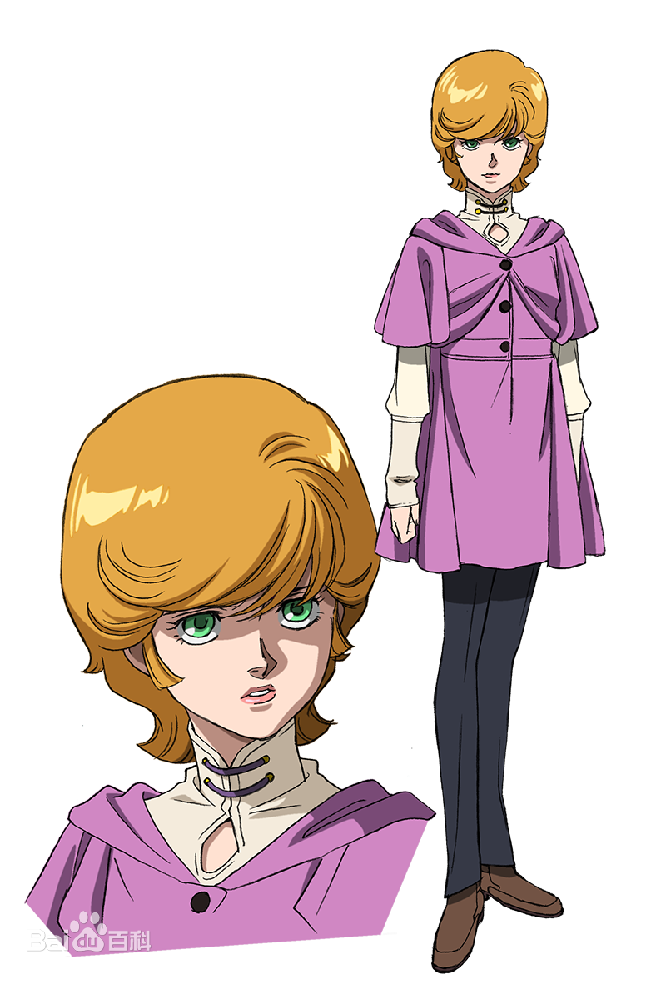
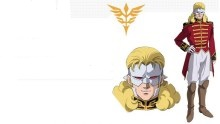
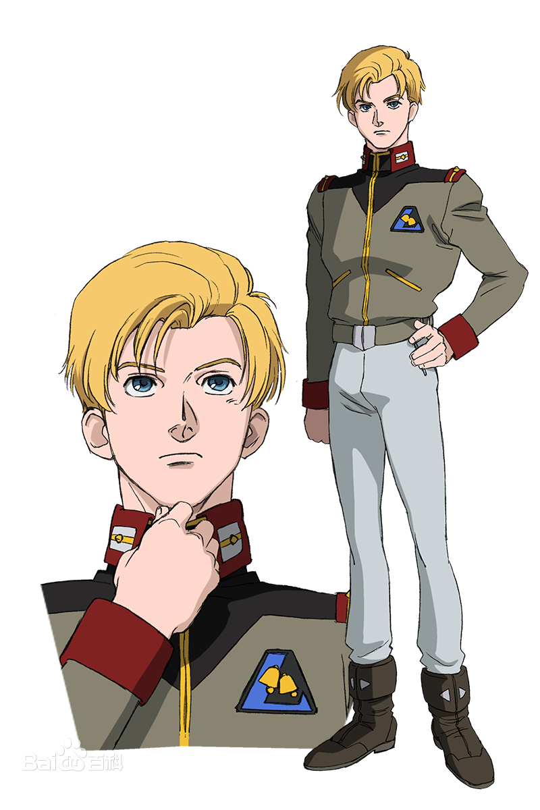
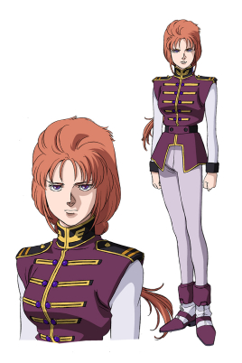
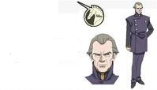

巴纳吉･林克斯：《机动战士高达UC》小说及OVA作品中的男主角，16岁的少年，拥有深褐色的瞳孔及头发，带有古老东洋血统的肤色， 亚纳海姆电子工业专科学校工学部资源开发科的实习学生，其真正身份为卡帝亚斯·毕斯特的私生子。所驾驶的机体为RX-0 独角兽高达。 自幼的经历让巴纳吉的性格比较孤僻，不大擅长于朋友以外的人进行交流，同时在生活中对任何事物都没有太大的热情，在SID7与奥黛丽相遇，受到奥黛丽的感染，开始想要帮助奥黛丽。
家庭关系：父亲：卡迪亚斯·毕斯特。毕斯特财团的第二代领导者（第一代领导者的孙子，在其父死后由第一代宗主直接指定为继承人）。 母亲：安娜。卡迪亚斯的第二任妻子，因不希望巴纳被卷入毕斯特家的命运而带其离开毕斯特家族。 同父异母的哥哥：亚伯特·毕斯特。卡迪亚斯的嫡子，因为不被父亲重视而背叛了他。 曾祖父：赛亚姆·毕斯特。卡迪亚斯的祖父，毕斯特财团的开创者，早年参与了拉普拉斯暗杀事件。

奥黛莉･伯恩： 真名为米妮瓦·拉欧·扎比 。是动画版《机动战士高达》，《机动战士Z高达》，《机动战士高达ZZ》以及《机动战士高达UC》当中的登场人物。 是被称为“袖章”的反政府组织的要人，真实身份是吉翁公国的元祖扎比家的末裔——米妮瓦·拉欧·扎比。（扎比家德兹鲁·扎比与妻子瑟娜之间的独生女。也是扎比家在一年战争之后唯一存活的人，现今新基翁的公主米妮瓦·扎比。） 她原本的目的是潜入伪装运输船“葛兰雪”中接近她的目的地工业七号，并且与卡帝亚斯·毕斯特见面请求不要将“拉普拉斯之箱”交给己方。 在潜入工业七号的时候由于碰到了补修墙壁上的瓦斯罐的开关。使得自己被瓦斯罐露出的瓦斯喷进了卫星中。在危难时刻被巴纳吉·林克斯所救。也因此改变了自己的命运。

弗尔·伏朗托： 弗尔·伏朗托，外号夏亚再世、赤色彗星再临，属于新吉翁残党“袖章”组织，是新吉恩残党“袖章”领袖。新吉翁残党“袖章”组织的最高领导者。 与夏亚一样带着面具不以真脸出现，再加上红色的座机“新安州”、华丽的作战风格和平时的表现(无论是头发的颜色、面具、还是说话时的声线以及用词)，致使他被称为“夏亚再世”。 事实上，他对于以米妮瓦·扎比(奥黛莉·伯恩)为首代表的旧吉翁理想不屑一顾，而且由于派系不同曾两次在阿加玛号劫持米涅芭和吉恩控制了阿加玛时试图借联邦之手杀死米妮瓦。 并且表面上装的很尊敬米涅芭和旧吉翁军人，但其实是对那些人已经到了厌恶的地步(派出葛兰雪队出危险的死亡任务类)。同时由于与正如他自己所说，他只是一个“容器”。夏亚真正的思想和做法。 并没有由他实现，所以是一个很可悲的人（他真正的身份是个被夏亚绝望后的灵魂附体的克隆人特典里有说明。啊这里好黑，这是哪，这里只有绝望，所以他说他自己不再是人类了）。 但是不知为何，对于巴纳吉·林克斯和玛莉妲·库鲁斯这样的NT和强化人，他都不愿意通过NT之间特有的交流方式去沟通。实为寄宿着夏亚负面精神的克隆人，有着夏亚的记忆和负面人格。 动画终章中搭乘新吉翁号(实为新安洲外挂装甲，大小接近GP03D)与巴纳吉交战，由于精神力骨架的共鸣和以灵魂方式存在的拉拉和夏亚会面，精神在和夏亚融合后相信了希望的意义，把全部托付给了巴纳吉后，作为夏亚的一部分和拉拉与阿姆罗一同离去。

利迪·马瑟纳斯： 利迪·马瑟纳斯是《机动战士高达UC》中一名男性角色，地球联邦军独立部队朗德·贝尔所属，很爱玩的“大男孩”。 喜欢老式有机翼的飞机。在战场上还是喜欢把自己心爱的老式螺旋桨飞机模型带进驾驶舱中。 作战中代号名称罗密欧008。驾驶机体RGZ-95 里歇尔(中期更换为DELTA PLUS，百式原型机DELTA高达的量产型），在工业七号的工厂部分战斗中救下了即将被LOTO残骸压死的米寇特、拓也和奥黛莉·伯恩三人。 之后由于家氏内部原因以及他所在的拟·阿伽玛等问题，被卷入了“拉普拉斯之箱”事件中。 在米妮瓦的影响下，希望为阻止战争献出自己的一份力量，但在知道“拉普拉斯之盒”的真面目时，对自己之前所选择的道路所感到迷茫，同时也对自己独自一人无法改变的现状而感到自卑， 无力反抗由父亲所代表的联邦势力的决定，曾劝解米妮瓦同自己接受联邦的决定，但遭到拒绝。在玛莉妲·库鲁斯离开报丧女妖后成为报丧女妖的驾驶员。后来在与玛莉妲的交战中， 在自卑与愤怒的情绪的促使之下，将玛莉妲击杀。最后同巴纳吉进行精神领域的沟通之后，再一次选择用自己的力量去改变世界的现状，同巴纳吉众人一同奋战。

玛莉妲·库鲁斯： 在UC 0096年出场的玛莉妲·库鲁斯是当时新吉恩的强化人驾驶员，在男性众多的新吉恩军队中可谓是一枝倾国倾城的玫瑰。 参与捕获独角兽作战败给独角兽之后，重伤被俘，被回收后送往NEW TYPE研究所，由于药物和催眠术导致看见自己过去的惨痛回忆陷入崩溃状态，最终被洗脑，并成为RX-0-2 UNICORN BANSHEE（独角兽2号机 报丧女妖 也就是黑独角兽）的驾驶员随后驾驶报丧女妖与独角兽对决，由于巴纳吉的话恢复了记忆之后与巴纳吉联手后驾驶破损严重的刹帝利为拟亚加玛挡下独角兽2号机的攻击时身亡。 在ZZ高达后期，克隆出生苏醒后，与哈曼·卡恩和来自亚加玛的Gundam 战斗。 在ZZ高达最终决战中，被击落，下落不明。 被斯贝洛亚·辛尼曼解救，重新回到新吉恩。 被冠以玛莉妲的名字，前往工业七号参与接收拉普拉斯之盒行动，和拟亚加玛所属部队交战，后被独角兽击退。 在大型运输机“迦楼罗”上暴走，将利迪驾驶的DELTA PLUS拆毁（利迪受伤） 在拟·阿卡玛上保护密涅瓦·扎比并协助巴纳吉压制“带袖的”的玫瑰·祖鲁，与巴纳吉·林克斯、安杰洛产生精神共鸣，安杰洛为了不让他们看见自己的过去， 遂在弗尔·伏朗托的命令下把玫瑰·祖鲁被独角兽抓住的右臂（腕部有线式引导炮飞出，独角兽抓住了炮的管线）用左手的钩爪切断后离开拟·亚加玛。在对新吉恩残党舰队战中， 为了让全武装独角兽可以帮助拟·亚加玛突破舰队而强行驾驶刹帝利修复型出击， 最后为了把利迪·马瑟纳斯从机器中救出来而正面挡下利迪在即将崩溃的情形下的一枪死亡（玛莉妲的这一死让利迪从仇恨中清醒过来，并前往帮助巴纳吉）。

卡帝亚斯･毕斯特： 是对现任联邦政府都会造成很大影响力的幕后黑手，比斯特财团的现任当家(大掌柜)。他是巴纳吉与亚波特的亲生父亲.曾经在巴纳吉小的时候与他见过面, 并且教导给他家中那幅"贵妇人与独角兽"画中的真谛.作为一个父亲来说.他并不算称职.巴纳吉的母亲之所以带巴纳吉离开比斯特家有一半的原因也归结于他和他的比斯特家族中的秘密. 亚波特之所以后来性格扭曲也有一定的原因是因为卡帝亚斯的原因. 但是反过来说他也是很无奈.因为自己的父亲因为要将"拉普拉斯之箱"中的秘密告知外面结果被自己的祖父所杀,当时还是年幼的卡帝亚斯在得知家族中的秘密. "拉普拉斯之箱"中的内容并且在自己父亲去世等种种事件之下,使得他不得带着比斯特财团当家者这个面具而面对一切. 巴纳吉的母亲去世以后.他便将巴纳吉接回到了工业七号中,并且安排他在工业七号上面的阿纳海姆电子工程专科学校学习.但是自己并没有与他相认. UC计划(独角兽计划)完成之前,他便联系了"带袖佬"的高层,要求进行"拉普拉斯之箱"的移交.就当与奥黛丽和自己的儿子巴纳吉接触完毕,UC计划完成.并且正在与"葛兰雪"上的舰长辛尼曼等人进行交谈之时, 由于情报的泄露,卫星7号遭到了以拟.阿伽玛为首的隆德贝尔舰队的军事行动.并且与玛莉妲驾驶的刹帝利进行了交战. 此时他为了保证"拉普拉斯之箱"不被联邦所得到,以及独角兽高达的安全,他便自己乘坐内部电梯进入了工厂.但是刚刚走出电梯门.就被自己的儿子亚波特带领着的联邦军军人所截. 虽然尽力摆脱了围困着自己的军人,但是却被亚波特打中了一枪.忍耐着剧痛他坚持到了独角兽的格纳库,并且努力调试"拉普拉斯之箱"程序的删除情况.当他还没有开始进行删除作业的时候. 巴纳吉赶到了独角兽高达这里.并且再次与卡帝亚斯见面.此时的卡帝亚斯在自己濒死之前将独角兽高达托付给了自己的继承人巴纳吉,并且与巴纳吉相认. 但是自己却因为飘出了驾驶舱而被工厂爆炸的大火而卷入其中.(可以说他是一位伟大的人.但并不是一个伟大的父亲)